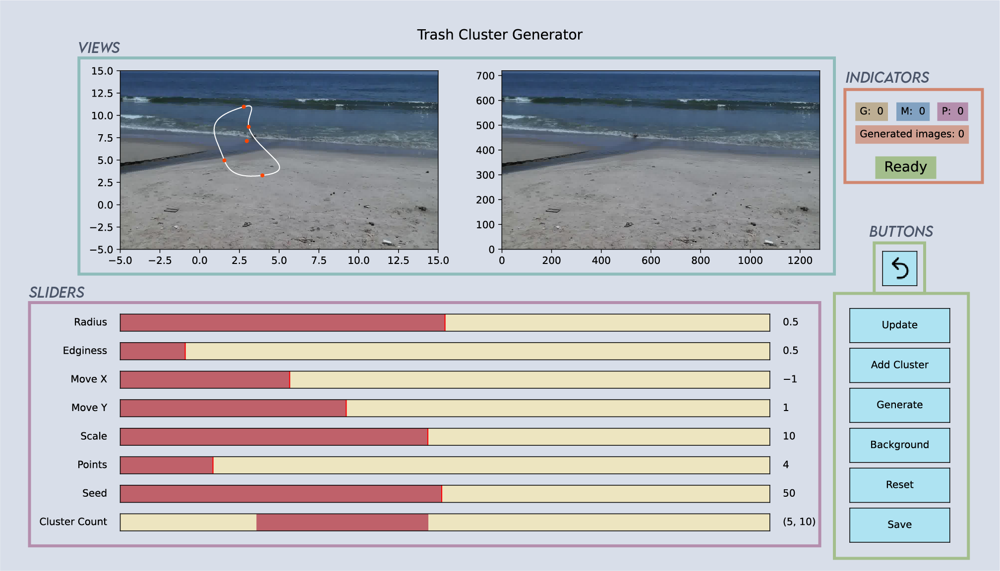

Objective
Motivated student with profound interest in the applications of Deep Learning for robotics, seeking full-time roles starting June 2024 in areas related to robot motion planning and perception.
I look forward to connecting with fellow robotics enthusiasts!
Currently located in Santa Clara, California, USA
Technical Skills
- Programming: Python, MATLAB, C/C++, CUDA, OpenMP, Linux
- Simulation and Design: MuJoCo, RViz, Solidworks, Gazebo, CARLA
- Tools and Frameworks: ROS 1/2, PyTorch, TensorFlow, OpenCV, Numpy, Docker, CMake, Git
Education
Georgia Institute of Technology, Atlanta, USA, 2022-2024
Master of Science in Robotics
GPA: 4.0/4.0
Relevant Coursework: Artificial Intelligence | ROS 1/2 | Motion Planning and State Estimation |
Multi-Robot Systems | Deep Learning | Robot Mechanics and Controls | Computer Vision |
Reinforcement Learning | High Performance Parallel Computing
SSN College of Engineering, Tamilnadu, India, 2018-2022
Bachelor of Engineering in Mechanical Engineering
GPA: 3.72/4.0
Relevant Coursework: Kinematics & Dynamics of Machinery | Machine Vision | Mechatronics | Algebra & Calculus | Statistics & Numerical Methods
Experience
CORE Robotics Lab, Georgia Tech
Motivated student with profound interest in the applications of Deep Learning for robotics, seeking full-time roles starting June 2024 in areas related to robot motion planning and perception. I look forward to connecting with fellow robotics enthusiasts!
Currently located in Santa Clara, California, USA
Georgia Institute of Technology, Atlanta, USA, 2022-2024
Master of Science in Robotics
GPA: 4.0/4.0
Relevant Coursework: Artificial Intelligence | ROS 1/2 | Motion Planning and State Estimation |
Multi-Robot Systems | Deep Learning | Robot Mechanics and Controls | Computer Vision |
Reinforcement Learning | High Performance Parallel Computing
SSN College of Engineering, Tamilnadu, India, 2018-2022
Bachelor of Engineering in Mechanical Engineering
GPA: 3.72/4.0
Relevant Coursework: Kinematics & Dynamics of Machinery | Machine Vision | Mechatronics | Algebra & Calculus | Statistics & Numerical Methods
Student Researcher, Atlanta, USA, May 23-May 24
Designed a dynamic simulation environment in MuJoCo to test an autonomous wheeled robot on various control strategies using Reinforcement Learning [Github]
Created models for distinct tasks with domain randomization and deployed on the physical robot via ROS pipeline and achieved ~98% success rate on mobile navigation with < 1% error
Georgia Institute of Technology
Graduate Teaching Assistant, Atlanta, USA, Jan 23-May 24
Worked under professors Thad Starner and Thomas Ploetz for the CS 3600/6601 Artificial Intelligence course at Georgia Tech with a focus on game-play algorithms and machine learning
Held weekly office hours assisting 300+ students with concepts and code debugging. Designed projects on Decision Trees, Bayesian Networks, and Graph Algorithms
Swaayatt Robots Pvt. Ltd.
Deep Learning Engineer - Internship, Bhopal, India, Oct 21-Mar 22

Implemented algorithms to prune NNs for object detection with images from L4 autonomous car and optimized architectures with C++ for PyTorch
Compressed YOLOv3 using Lottery Ticket Hypothesis by 30% with an accuracy drop of ~5%
Publications
-
Multi-class segmentation of coastal debris using encoder-decoder architectures
Surya Prakash, S., Vengadesh, V., Vignesh, M., Gopal, S.K,
Machine Learning Techniques for Smart City Applications: Trends and Solutions, Springer 2022